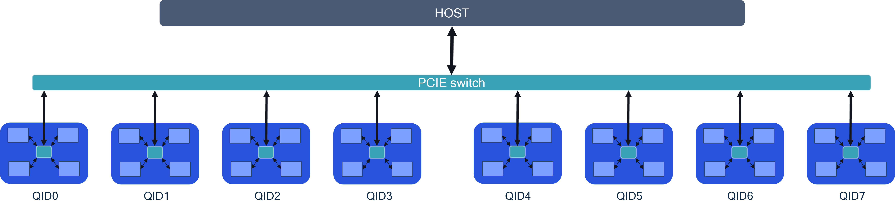

Model Sharding¶
Cloud AI SDK enables model sharding which provides the benefits of running larger models and improve throughput/latency/batch-size support across SoCs/Cards connected to the same host. Topologies supported are with or without a PCIe switch. Cards connected to a PCIe switch with peer-to-peer communication enabled provide the best performance.
Use Cases¶
There are 2 primary use cases of model sharding via tensor slicing.
Execute models that do not fit in the memory footprint of a single SoC.
Optimize performance (latency/throughput) for models that can fit within a single SoC but still benefit from tensor-slicing.
Architecture¶
For tensor slicing to achieve the best performance (latency/throughput), the server architecture in particular, accelerator card inter-connect performance is critical. The image below shows 8 AI 100 Ultra accelerator cards connected via PCIe switches to the host. There are two approaches regarding card-to-card communication.
P2P communication between the cards through a PCIe switch. This architecture provides the best performance.
Multi-device through host: Card to card communication happens through the host. This approach will have inferior performance compared to P2P.
This sample configuration allows model sharding via tensor slicing across 8 cards (typically used for > 15B parameter models).

Tensor Slicing¶
Model operations are split across muliple SoCs (maximum across 16 SoCs in P2P config). The image provides a sample graph execution that is tensor sliced across 4 AI 100 Ultra accelerator cards. As seen from the image, there is a lot of inter-card traffic across models layers. Inter-card data bandwidth available plays a critical role in the performance. Hence, the need to enable P2P inter-card communication via PCIe switch. The AI 100 Ultra card has a PCIe switch between the 4 SoCs on the card. In a server with many AI 100 accelerators the PCIe hierarchy plays a critical role in the performance.

Platform setup¶
Prerequisites¶
A minimum of 4 AI 100 Ultra cards is recommended per PCIe switch.
The PCIe switch shall meet the maximum bandwidth requirements per lane for all cards connected to the switch.
Host should be able to support large BAR sizes. Each AI 100 accelerator card requires 2+ GB of BAR space per SoC.
- BAR region 4 for every AI 100 SoC is 2G (size=2G as shown below).``` lspci -s <PCIe address of AI 100 SoC> -vv | grep “Region 4” Region 4: Memory at xyz (64-bit, prefetchable) [size=2G]
``` If the region 4 for every SoC is not 2G, contact your System Integrator.
Card configuration¶
Enable multi-device partitioning (MDP) on all the SoCs using
--setup_mdp all option while installing the platform SDK.
sudo ./install.sh --setup_mdp all
Example output:
Enabling MDP support system wide.
Disabling ACS. Required to enable MDP P2P.
Increasing mmap limit (max_map_count) to 2048000.vm.max_map_count = 2048000 #qaic
Increasing openfiles limit to 1048576.Installation is successful.
Note: This will enable mdp, disable acs, increase the mmap limit &
ulimit value.
Enable multi-device partitioning (MDP) on all the SoCs can also be done
using qaic-util, for more details please refer to qaic-util user
guide
qaic_util
Note: This will enable mdp and disable acs.
Compilation¶
Model partitioning across multiple devices is done by the compiler. The
user is required to specify the number of SoCs/devices and the
connectivity between the devices. Here a few examples of the device
partition config files based on the connectivity and number of devices.
The device partition config file is passed to the compiler qaic-exec
CLI.
Example 1: Model, tensor sliced across 4 SoCs with P2P communication between the SoCs.
mdp_4soc_p2p.json
{
"connections": [
{
"devices": [0,1,2,3],
"type": "p2p"
}
],
"partitions": [
{
"name": "Partition0",
"devices": [
{
"deviceId": 0,
"numCores": 16
},
{
"deviceId": 1,
"numCores": 16
},
{
"deviceId": 2,
"numCores": 16
},
{
"deviceId": 3,
"numCores": 16
}
]
}
]
}
Example 2: Model, tensor sliced across 2 SoCs with communication through
the host between the SoCs. If no connections are defined, the
connectivity is assumed to be through the host
mdp_2soc_host.json
{
"partitions": [
{
"name": "Partition0",
"devices": [
{
"deviceId": 0,
"numCores": 16
},
{
"deviceId": 1,
"numCores": 16
}
]
}
]
}
To compile the model with the tensor sliced configurations, pass the
device paritioning config file to qaic-exec using
mdp-load-partition-config flag as shown below.
/opt/qti-aic/exec/qaic-exec \
-m=$model_path \
-aic-hw \
-aic-hw-version=2.0 \
-network-specialization-config=specializations.json \
-retained-state \
-convert-to-fp16 \
-mxfp6-matmul \
-aic-num-cores=${CORES} \
-custom-IO-list-file=${model_name}/custom_io.yaml \
-compile-only \
-aic-binary-dir=qpc/${model_name}-${BS}bs-${PL}pl-${CL}cl-${CORES}c-${SOCS}soc-mxfp6 \
-mdp-load-partition-config=mdp.json
Where:
CORES is the number of NSP cores per AI 100 SoC, typically 16
BS is batch size
PL is the prompt length
CL is the context length
SOCS is the number of AI 100 SoCs (4 per Ultra Accelerator, or 1 per Std/Pro Accelerator)
Execution¶
Refer to Cloud-ai-sdk example for executing inference on multi-SoCs.
Recommendations¶
For very large models which are compiled for inter-SoC communication through the host, the host memory requirements can be large. If inference fails due to host or device resource exhaustion, try below options.
Increase system memory (RAM) to 1TB and CPU count to 32 cores or higher.